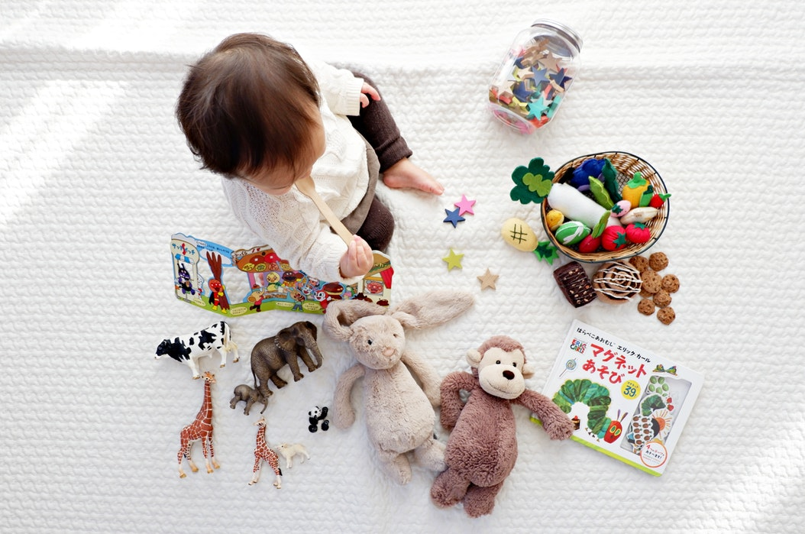

Diseño de E-commerce para tienda infantil
Objetivos iniciales del proyecto
Párate aquí y sueña
Con esta frase Orion Kids nos da la bienvenida al microcosmos que han creado en medio de la ciudad. Un espacio que fomenta la lectura y creatividad infantil al ofrecer eventos culturales, libros, juguetes, ropa y accesorios para niños de 0 a 7 años. Tienen a la venta una colección de libros cuidadosamente seleccionada por quienes crearon este concepto, además de ofrecer artículos diseñados por artesanos mexicanos y artistas independientes. Preocupadas por el ambiente promueven el uso de materiales amigables y evitan el uso de materiales desechables, como el plástico.
Por el momento Orion Kids no realiza ventas por internet, solían hacerlo durante los primeros meses del año, pero se encontraron con la siguiente problemática:
El personal de la tienda debía, además de encargarse de las ventas en la tienda física, encargarse de actualizar las redes sociales de Orion Kids (Facebook e Instagram), contestar los mensajes recibidos en ambas plataformas de usuarias interesadas en adquirir un producto. Acordar el método de pago (depósito a una cuenta bancaria), intercambiar fotografías que sirvieran como prueba de haber realizado el pago y al mismo tiempo coordinar un servicio de entrega con el que la compradora estuviera de acuerdo. A estos servicios debía acudir el personal de la tienda en persona, ya que debían pesar los paquetes y cotizar los envíos, en caso de que la compradora lo considerara fuera de su presupuesto, el personal debía buscar una nueva opción. Esta búsqueda continua ocasionaba el cierre ocasional de la tienda, lo cual causaba la pérdida de posibles ganancias dentro de la tienda física.
Debido a la inversión de tiempo y horas de trabajo que demandaba esta forma de venta, Orion Kids busca una manera de automatizar el sistema de ventas y entrega de productos que satisfaga las necesidades de sus clientas en línea.
Inspiradas por el cinturón de Orión, el más brillante del universo, se han propuesto los siguientes objetivos:
- Posicionarse como una de las mejores librerías infantiles de la Ciudad de México.
- Ofrecer una experiencia de compra asistida y personalizada en la tienda física y de manera online.
- Crear una línea de productos que refleje el diseño y valores de la marca a finales del 2018.
- Llegar a más lugares de la República por medio de una tienda en línea.
- Aumentar, en un periodo de un año, el número de ventas mensuales conjuntas en la tienda física y online.
- Fomentar la lectura infantil por medio de eventos culturales gratuitos.
- Generar y retener clientes que desean realizar procesos de compra en línea.
- Brindar una experiencia de compra en línea que brinde seguridad y confianza a sus usuarias.
- Crear una plataforma de ventas online que refleje los objetivos de la marca.
Nos adentramos en este universo por medio de entrevistas realizadas a las socias de este espacio, así como al personal que se encarga de brindar una experiencia única a cada una de las clientas de Orion Kids, quienes comparten la preocupación de fomentar el gusto por la lectura en sus hijos y desean adquirir productos en línea que les permitan atender las necesidades específicas de sus niños pequeños. De igual forma realizamos observaciones contextuales dentro de la tienda física, de ellas hablaremos más adelante.
Nos acercamos a 5 clientas de Orion Kids, para lo cual elaboramos una guía de entrevista que nos ayudaría a conocer más sobre sus necesidades, motivaciones y preocupaciones. Además de preguntas señalamos puntos de interés en los que indagaríamos de acuerdo a las respuestas formuladas por las entrevistadas.
- Nombre
- Edad
- Estado civil
- Residencia
- Uso de redes sociales
- Habilidad tecnológica
- Tiendas online que usa
- Tiendas online que prefiere
- ¿Has comprado libros en línea?
- Escuchar su última experiencia
- ¿Primera visita a la tienda o es clienta frecuente?
- ¿Cómo encontró la tienda?
- ¿Qué ha comprado? ¿por qué? ¿para quién?
- ¿Ha asistido a los eventos? ¿Por qué?
- Expectativas de la tienda en línea (proceso de compra, métodos de pago, información del producto, productos, tiempo de entrega)
A raíz de este primer acercamiento elaboramos un mapa de empatía como un primer paso para conocer a nuestras usuarias y la información que acabábamos de obtener.
A partir de este, llevamos a cabo un análisis profundo de las entrevistas que realizamos, obtuvimos insights que usamos para dar vida a nuestra user persona, Ana Torres, y a nuestros clientes, Francisco y Laura, a quienes les presentamos a continuación:
Benchmark
Al conocer a nuestras usuarias, nos concentramos en analizar aquellas tiendas en línea en las que realizan compras de manera habitual. Además de otras tiendas, que elegimos debido a su temática y el éxito que tienen al vender productos para niños dentro de sus tiendas físicas y en internet. A continuación los resultados:
Encontramos que las 5 tiendas tienen un flujo de compra similar, en el que ofrecen 3 métodos de pago, mismos que nuestras usuarias resaltaron como “los más cómodos”, proponemos utilizarlos en nuestra plataforma de venta en línea para brindar seguridad y comodidad durante el proceso de pago.
Los métodos de envío encontrados no empataban con lo que Orion Kids buscaba ofrecer a sus usuarias, por lo que investigamos 4 mensajerías distintas, cada una aportaría un valor distinto a las clientas de Orion Kids, como es la entrega en el mismo día de compra dentro de la Ciudad de México y la cobertura nacional para clientas foráneas.
Por otra parte, 3 de estas tiendas tienen libros a la venta como sus principales artículos, más no ofrecen artículos mexicanos artesanales, mientras que en 2 de las tiendas analizadas no ofrecen juguetes ni artículos para bebé, como hace Orion Kids.
En particular, la tienda Macaria y Jacinta, que al igual que Orion Kids vende juguetes y artículos para bebé, ofrece una experiencia de compra online que no permite a la usuaria llevar a cabo una compra dentro del portal, se le invita a realizar parte del proceso en línea y por teléfono, lo cual rompe el flujo de compra de manera inesperada.
Costumer Journey
Al tener un acercamiento al proceso de compra preferido por nuestras clientas y haber realizado observaciones contextuales dentro de la tienda, mapeamos la experiencia de compra de nuestra user persona.

Nos concentramos en mapear los puntos de contacto que Ana Torres tiene con la marca, así como los gain points que trasladaremos a la experiencia de compra online como es la atención personalizada que reciben las usuarias de parte del personal de Orion Kids, quienes han leídos los libros que ofrecen, además de ponerlos al alcance de los visitantes de manera abierta, para que puedan conocerlos y saber si son lo que están buscando según sus necesidades.
De igual manera, la atención del personal y sus descripciones detalladas de los productos ayudan a realizar la elección de los productos a comprar, así sean usuarias que buscan un producto en específico o clientas que busquen un regalo para un evento especial y desconozcan lo que sería más adecuado.
Encontramos que el valor agregado de Orion Kids se encuentra en los eventos culturales que realiza para acompañar los productos que ofrece dentro de la tienda, Los cuales tienen una producción limitada al ser elaborados de manera artesanal. Debido a esto forman parte de publicaciones digitales que les recomiendan como un espacio a visitar para aquellas personas interesadas en productos infantiles fuera de lo común.
Por otra parte, encontramos los siguientes pain points dentro de la experiencia de nuestra user persona:
- El espacio físico de la tienda es pequeño, no cuenta con las intalaciones o mobiliario necesario para albergar eventos y actividades de más de 5 personas.
- Por la misma razón que el punto anterior, el acomodo de los libros en la tienda no permite un acercamiento libre y sin complicaciones. Ya que un libro se encuentra acomodado sobre otro, lo cual dificulta su visibilidad.
- No existe un display de productos realizado por temática o edad, por lo que se dificulta el encontrar el producto deseado sin ayuda del personal.
- El método de pago por tarjeta tiene fallas, lo cual provoca el abandono del proceso de compra.
- No ofrecen una bolsa a sus clientas a menos que los productos adquiridos sean regalos.
Mapeamos las emociones experimentadas y el nivel de engagement que la experiencia genera en nuestra user persona, analizamos las entrevistas y observaciones realizadas para elaborar las siguiente propuestas de mejora. Las cuales invitaríamos a realizar a la par del desarrollo de una tienda en línea.
- Crear engagement con la marca por medio de un calendario de actividades y eventos, lo cual permitiría conocerlos con antelación, planear la participación en los mismos y su difusión con otras interesadas. Además de hacer uso de su alianza con el Cine Tonalá para realizar eventos donde la asistencia sea mayor a 5 personas, dentro de sus instalaciones.
- Generar publicaciones en redes sociales de manera constante, identificando las horas de mayor tráfico en las redes de la marca y las preferencias de uso de las usuarias en dichas redes sociales.
- Especificar dentro de la descripción de Orion Kids el hecho de ser una tienda donde ofrecen una variedad de productos, además de actividades para niños, ya que por el momento se describen como un “espacio” para niños, lo cual crea la confusión, de acuerdo a las entrevistas realizadas, de ser una ludoteca.
- Trabajar en el display de los productos de acuerdo a criterios de edad o etapas de desarrollo, además de selecciones especiales para eventos infantiles, para su facilitar su acceso a usuarias que visitan por primera vez la tienda, o para quienes no pueden ser atendidos por el personal de Orion Kids.
- Optimizar el sistema de pago con tarjeta.
- Ofrecer bolsas a las clientas al comprar productos dentro de la tienda, sin importar el motivo de compra.
De acuerdo al proceso de investigamos que realizamos hasta este momento, elaboramos el siguiente user flow para la experiencia de compra dentro de la tienda online de Orion Kids. Donde buscamos acompañar a la usuaria en una experiencia de compra guiada donde se le mantenga informada sobre lo que está sucediendo y lo que sucederá a continuación, además de poner a su alcance información relevante para que conozca los productos en los que está interesada, así como la marca que los elabora (en caso de ser artesanales o tener un valor agregado), los beneficios que presenta y las recomendaciones generales de otras clientas que han adquirido los productos.
User Flow

Flow Chart
Con el flujo elaborado, proponemos una experiencia intuitiva a lo largo del proceso de compra, donde acompañemos a la usuaria desde su ingreso al sitio, presentando la misión y visión de Orion Kids, hasta la actualización continua de la situación de su compra por medio del correo electrónico que proporcionó dentro de sus datos de contacto.
Sketches y Wireframes
Después de diseñar el flujo elaboramos nuestra primera propuesta de diseño para la interfaz de la tienda online.

Prototipo clickeable con Wireframes
Para el prototipo nos concentramos en mostrar el proceso ideal de compra de uno de los artículos, por lo que mencionamos algunas consideraciones:
- Dentro de la pantalla del producto seleccionado generamos recomendaciones con temáticas parecidas al producto seleccionado, mismas que se generarían si el resultado de la búsqueda realizada dentro del buscador de productos no encuentra el producto en cuestión, para así generar no cortar el flujo de compra e invitar a la usuaria a seguir explorando la tienda.
- Creamos un apartado de eventos donde se colocaría el calendario antes mencionado, mismo que invitaría a la usuaria a suscribirse a un newsletter con los últimos productos agregados al catálogo y los eventos próximos a realizarse.
- Dentro del formulario de compra colocamos tags con números visibles para que la usuaria conociera el paso en el cual se encuentra, así como aquellos que le faltan para terminar, para así eliminar posibles sentimientos de frustración en el proceso de compra.
- Los métodos de envío seleccionados tienen en mente las necesidades de la marca y de sus usuarias, al ofrecer envíos dentro del mismo día de la compra con precios accesibles.
User testing
A continuación les invitamos a mirar el video de una de las 5 clientas de Orion Kids que probaron el prototipo que realizamos.
A partir de el proceso de testeo realizado encontramos las siguientes verbalizaciones:
- “No entiendo por qué hay 2 botones de finalizar compra, me parecen 2 procesos de compra distintos. Me confunde”.
- “Me gusta que me llevan de la mano (en el proceso de compra) para saber cuántos pasos me faltan”.
- “Me gusta que se cierra la numeración, me dice que ya lo hice, todo bien, y ahora mi atención está puesta completamente en la envoltura”.
- “Al terminar la compra, no hay una sugerencia para seguir navegando, pudiera haber un botón que me dijera continúa viendo los productos, que me llevara al Home”.
- “Me gusta cómo están las cosas organizadas, lo entiendo. Es claro, me lleva de la mano a la hora de pagar, me hace sentir segura porque voy viendo los pasos”.
- “Me gusta cómo me habla la app, es amable, pero no confianzuda ni formal”.
- “Creo que el flujo es super entendible y más el cohete ese, me parece extraordinario”.
- “(El cohete) es entendible que es un carrito, va con el tema. Me encantó el final donde dicen que me enviarán un correo, sentí como si hubiera realizado una compra buena”.
Prototipo de alta fidelidad
Implementamos los hallazgos encontrados durante las sesiones de testeo para realizar el prototipo de alta fidelidad. La paleta de colores elegida, así como las tipografías usadas están inspiradas por el diseño minimalista e infantil que Orion Kids tiene dentro de sus redes sociales y su tienda física, el universo es un tema recurrente dentro de los gráficos que utiliza.

Después de un proceso de diseño y testeo iterativo elaboramos nuestra segunda propuesta de diseño, donde jerarquizamos y alineamos los componentes para crear un flujo que invite a la compra y comprensión intuitiva de cada uno de los elementos de la página. Así también modificamos la paleta de colores para que empatara con la visión minimalista que caracteriza a Orion Kids.
Video. Proceso de elaboración del proyecto
Para finalizar el viaje por este universo de creación, les invitamos a conocer un poco más sobre el proceso de diseño de la tienda en línea de Orion Kids, a través del siguiente video (duración 10 minutos).